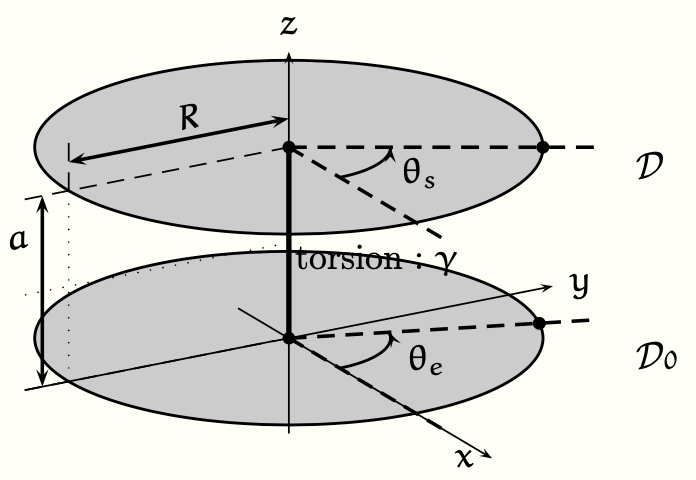

PrepOral
[MP] [Maison] [1]
Filtrage mécanique
Enoncé
Un disque $\mathcal{D}$ de moment d’inertie $J$ par rapport à son axe de rotation peut tourner librement autour
de $Oz$ (angle $\theta_s$) via une liaison pivot lubrifiée (le couple résistant appliqué au disque s’écrit $\Gamma = -h
\dot \theta_s$). En outre il est relié via un câble de torsion (de constante $\gamma$) à un disque $\mathcal{D}_0$ dont
le mouvement est imposé.

Le mouvement de $\mathcal{D}_0$ est tel que : $\dot \theta_e(t) = \omega + \omega_1(t)$ où $\omega$ est une constante
et $\omega_1(t)$ une perturbation périodique de période $T = 2\pi/\omega$.
Q. À quelle condition a-t-on $\dot \theta_s(t) \simeq \omega$ ?
Commentaires
Encore jamais posé !
Corrigé
Le TMC donne : $$J \ddot \theta_s = - \gamma (\theta_s -\theta_e) - h \dot \theta_s$$ Ce qui s'écrit (avec $\Omega= \dot \theta$) : $$ \ddot \Omega_s = - \gamma (\Omega_s -\Omega_e) - h \dot \Omega_s$$